13.y — 使用语言参考
根据你在学习编程语言（特别是C++）的旅程中所处的位置，LearnCpp.com可能是你学习C++或查找某些内容的唯一资源。LearnCpp.com旨在以初学者友好的方式解释概念，但它无法涵盖语言的每个方面。当你开始探索这些教程未涉及的主题时，你不可避免地会遇到这些教程无法回答的问题。在这种情况下，你需要利用外部资源。
其中一个资源是 Stack Overflow，你可以在那里提问（或者更好的是，阅读之前有人问过的相同问题的答案）。但有时更好的第一站是参考指南。与教程不同，教程倾向于关注最重要的主题并使用非正式/日常语言使学习更容易，参考指南使用正式术语精确描述C++。因此，参考资料往往全面、准确……而且难以理解。
在本课中，我们将展示如何使用 cppreference，一个我们在整个课程中引用的流行标准参考，通过研究3个示例。
概述
Cppreference以一个 概述 的核心语言和库欢迎你：
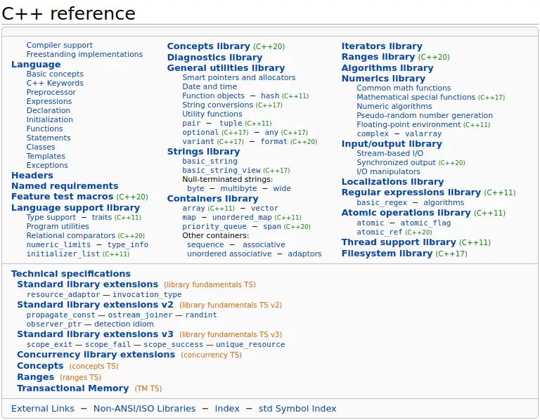
从这里，你可以访问cppreference提供的所有内容，但使用搜索功能或搜索引擎更容易。概述是一个很好的地方，在你完成LearnCpp.com上的教程后，可以深入了解库，并查看语言还提供了哪些你可能不知道的内容。
表格的上半部分显示了当前语言中的特性，而下半部分显示了技术规范，这些特性可能会或可能不会在未来的C++版本中添加，或者已经部分被语言接受。如果你想了解即将推出的新功能，这会很有用。
从C++11开始，cppreference用它们添加的语言标准版本标记所有特性。标准版本是你在上图中某些链接旁边看到的小绿色数字。没有版本号的特性自C++98/03以来就已存在。版本号不仅出现在概述中，而且出现在cppreference的任何地方，让你确切知道在特定C++版本中可以使用什么。
警告
如果你使用搜索引擎，并且某个技术规范刚刚被接受为标准，你可能会被链接到技术规范而不是官方参考，这可能会有所不同。
提示
Cppreference既是C++的参考，也是C的参考。由于C++与C共享一些函数名，你在搜索某些内容后可能会发现自己进入了C参考。URL和cppreference顶部的导航栏始终显示你正在浏览C还是C++参考。
std::string::length
我们将从研究一个你在之前课程中知道的函数开始， std::string::length，它返回字符串的长度。
在cppreference的右上角，搜索“string”。这样做会显示一长串类型和函数，其中只有顶部的内容目前相关。
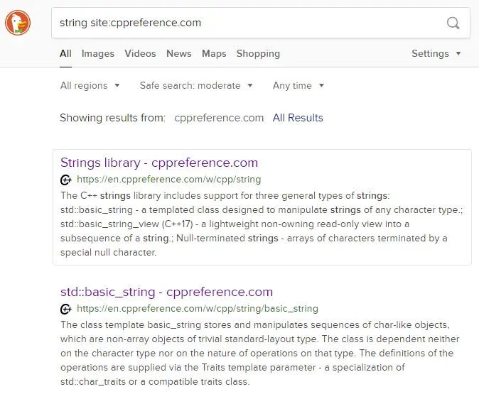
我们本可以立即搜索“string length”，但为了在本课中尽可能多地展示，我们选择了较长的路径。点击“Strings library”会进入一个讨论C++支持的各种字符串的页面。
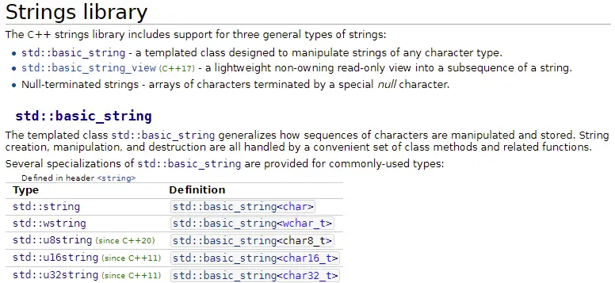
如果我们在“std::basic_string”部分下查看，可以看到一个typedef列表，其中包含std::string。
点击“std::string”会进入 std::basic_string的页面。没有单独的页面用于 std::string，因为 std::string 我们还调用了 typedef 对于 std::basic_string<char>，这再次可以在 typedef 列表中看到：
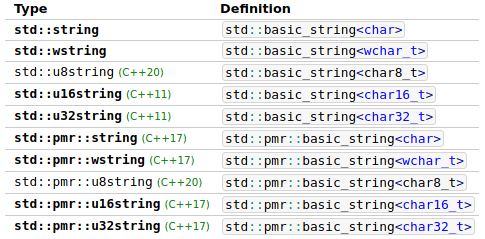
浮点类型的 <char> 意味着字符串的每个字符都是 char类型。你会注意到C++提供了使用不同字符类型的其他字符串。这些在使用Unicode而不是ASCII时可能很有用。
在同一页面的更下方，有一个 成员函数列表 （类型具有的行为）。如果你想知道可以对类型做什么，这个列表非常方便。在这个列表中，你会找到一行用于 length （以及 size)。
跟随链接会进入 length 和 size的详细函数描述，两者功能相同。
每个页面的顶部以简短摘要开始，包括特性、语法、重载或声明：
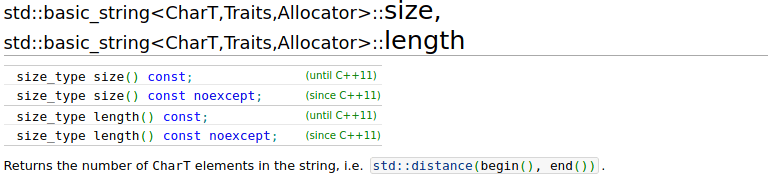
页面标题显示了类名和函数名以及所有模板参数。我们可以忽略这部分。在标题下方，我们看到所有不同的函数重载（共享相同名称的函数的不同版本）以及它们适用的语言标准。
在下面，我们可以看到函数接受的参数以及返回值的含义。
因为 std::string::length 是一个简单的函数，这个页面上的内容不多。许多页面展示了它们所记录特性的示例用法，就像这个页面一样：
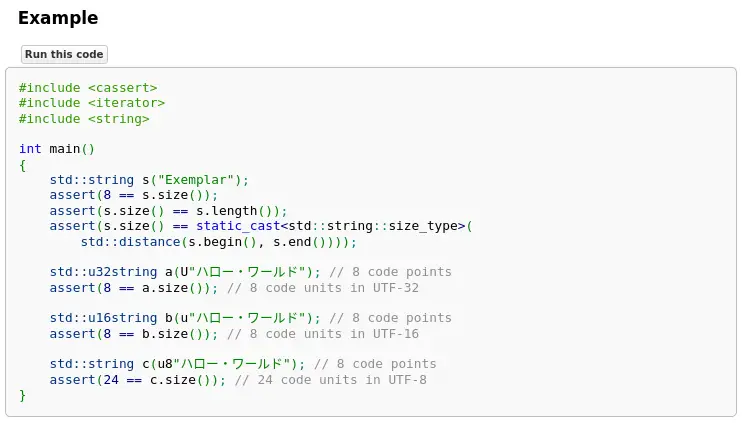
当你还在学习C++时，示例中会有你以前没见过的特性。如果有足够的示例，你可能能够理解足够多的内容，从而了解函数的使用方式和功能。如果示例太复杂，你可以在其他地方搜索示例，或者阅读你不理解部分的参考（你可以点击示例中的函数和类型来查看它们的作用）。
现在我们知道 std::string::length 确实如此，但我们之前就知道了。让我们看看一些新东西！
std::cin.ignore
在课程 9.5 -- std::cin与处理无效输入，我们讨论过 std::cin.ignore，它用于忽略直到换行符的所有内容。这个函数的一个参数是一个又长又啰嗦的值。那是什么来着？你不能就用一个大数字吗？这个参数到底是做什么的？让我们弄清楚！
在 cppreference 搜索框中输入“std::cin.ignore”会得到以下结果：
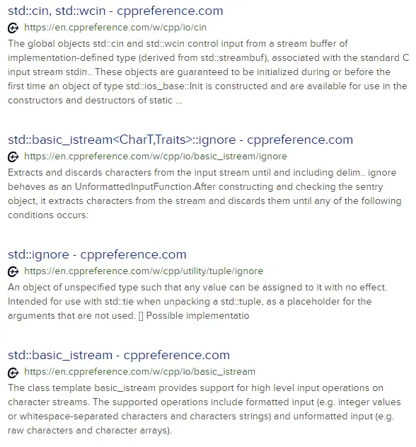
std::cin, std::wcin- 我们想要.ignore，而不是普通的std::cin。std::basic_istream<CharT,Traits>::ignore- 咦，这是什么？先跳过吧。std::ignore- 不，不是这个。std::basic_istream- 也不是这个。
它不在那里，现在怎么办？让我们去 std::cin 并从那里开始。那个页面上没有明显的内容。在顶部，我们可以看到 std::cin 和 std::wcin的声明，它告诉我们使用 std::cin：
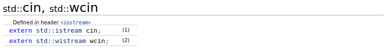
我们可以看到 std::cin 是类型为 std::istream的对象。让我们点击链接到 std::istream：
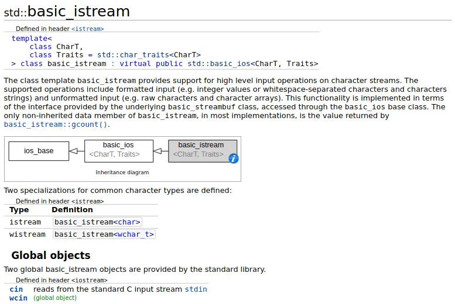
等等！我们之前搜索“std::cin.ignore”时见过 std::basic_istream 原来 istream 是 basic_istream的 typedef 名称，所以我们的搜索也许并没有那么错。
向下滚动那个页面，我们看到了熟悉的函数：
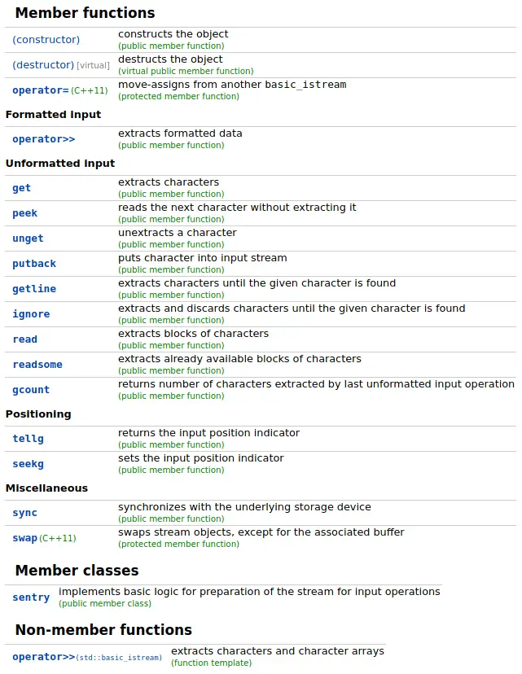
我们已经使用过其中许多函数： operator>>， get， getline， ignore。在那个页面上滚动，了解一下 std::cin。然后点击 ignore中还有什么其他内容，因为那是我们感兴趣的。
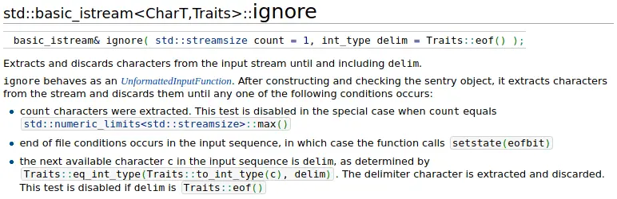
在页面顶部有函数签名以及函数及其两个参数作用的描述。参数后面的 = 符号表示 默认参数 （我们在第 11.5 -- 默认参数课中介绍）。如果我们不为具有默认值的参数提供参数，则使用默认值。
第一个要点回答了我们所有的问题。我们可以看到 std::numeric_limits<std::streamsize>::max() 对 std::cin.ignore有特殊含义，因为它禁用了字符计数检查。这意味着 std::cin.ignore 将继续忽略字符，直到找到分隔符，或者直到没有更多字符可查看。
很多时候，如果你已经知道一个函数但忘记了参数或返回值的含义，你不需要阅读整个描述。在这种情况下，阅读参数或返回值的描述就足够了。
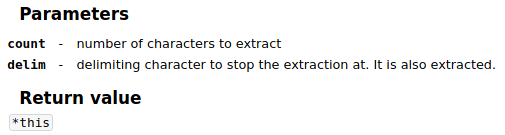
参数描述很简短。它不包含 std::numeric_limits<std::streamsize>::max() 的特殊处理或其他停止条件，但作为一个很好的提醒。
语言语法示例
除了标准库，cppreference 还记录了语言语法。这是一个有效的程序：
#include <iostream>
int getUserInput()
{
int i{};
std::cin >> i;
return i;
}
int main()
{
std::cout << "How many bananas did you eat today? \n";
if (int iBananasEaten{ getUserInput() }; iBananasEaten <= 2)
{
std::cout << "Yummy\n";
}
else
{
std::cout << iBananasEaten << " is a lot!\n";
}
return 0;
}
为什么在 if-statement的条件内部有一个变量定义？让我们使用 cppreference 来弄清楚它的作用，方法是在我们最喜欢的搜索引擎中搜索“cppreference if statement”。这样做会引导我们到 if 语句。在顶部，有一个语法参考。
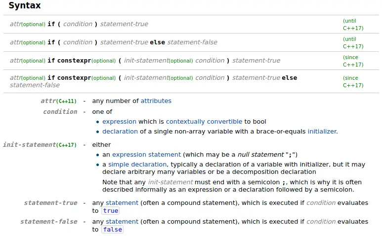
看看 if-statement。如果你移除所有可选部分，你会得到一个 if-statement 你已经知道的。在 condition之前，有一个可选的 init-statement，看起来就像上面代码中发生的情况。
if ( init-statement condition ) statement-true if ( init-statement condition ) statement-true else statement-false
在语法参考下方，有对语法各部分的解释，包括 init-statement。它说 init-statement 通常是一个带有初始化器的变量声明。
语法之后是对 if-statements 的解释和简单示例：
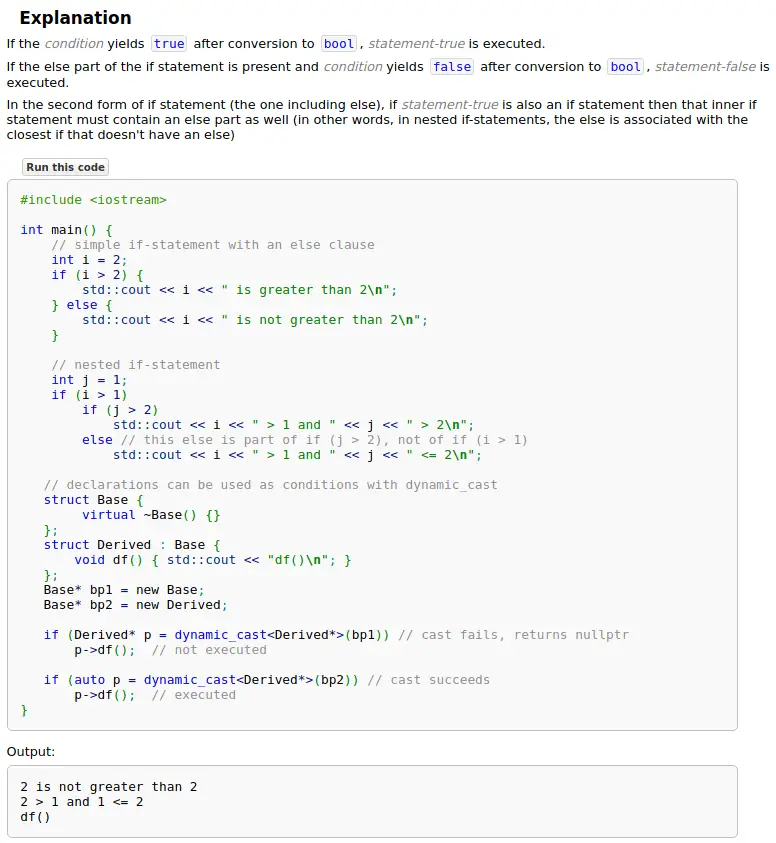
我们已经知道 if-statements 是如何工作的，并且示例中没有包含 init-statement，所以我们向下滚动一点，找到一个专门讨论 if-statements 带初始化器的部分：
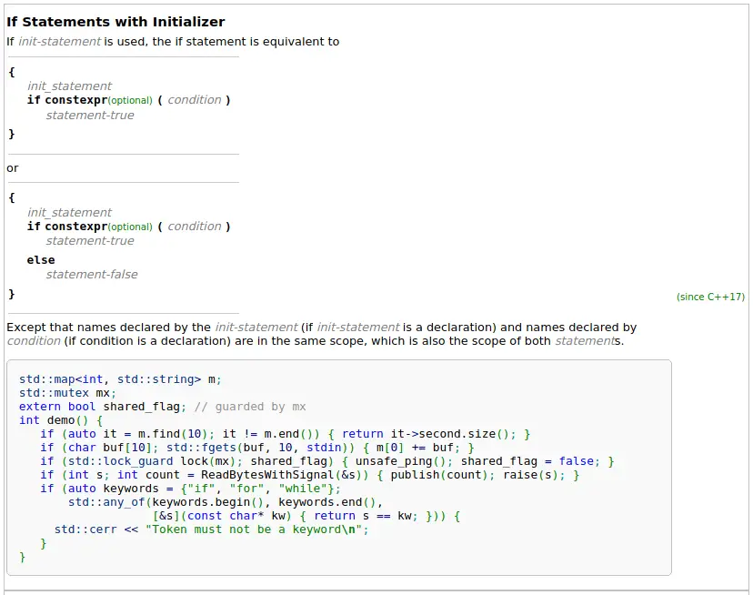
首先，它展示了如何 init-statement 可以在不实际使用 init-statement的情况下编写。现在我们知道问题中的代码在做什么了。这是一个普通的变量声明，只是合并到了 if-statement。
中。之后的句子很有趣，因为它告诉我们来自 init-statement 的名称在 两者 语句（statement-true 和 statement-false）中都可用。这可能令人惊讶，因为你可能原本认为该变量仅在 statement-true。
浮点类型的 init-statement 示例使用了我们尚未介绍的特性和类型。你不必理解所有内容就能理解 init-statement 是如何工作的。让我们跳过所有太令人困惑的内容，直到找到我们可以处理的东西：
// 迭代器，我们不知道。跳过。
if (auto it = m.find(10); it != m.end()) { return it->second.size(); }
// [10]，那是什么？跳过。
if (char buf[10]; std::fgets(buf, 10, stdin)) { m[0] += buf; }
// std::lock_guard，我们不知道那是什么，但它是一种类型。我们知道类型是什么！
if (std::lock_guard lock(mx); shared_flag) { unsafe_ping(); shared_flag = false; }
// 这很简单，那是一个 int！
if (int s; int count = ReadBytesWithSignal(&s)) { publish(count); raise(s); }
// 呼，不用了，谢谢！
if (auto keywords = {"if", "for", "while"};
std::any_of(keywords.begin(), keywords.end(),
[&s](const char* kw) { return s == kw; })) {
std::cerr << "Token must not be a keyword\n";
}
最简单的例子似乎是带有 int的那个。然后我们看分号后面，还有另一个定义，奇怪……让我们回到 std::lock_guard 示例。
if (std::lock_guard lock(mx); shared_flag)
{
unsafe_ping();
shared_flag = false;
}
由此，相对容易看出 init-statement 是如何工作的。定义某个变量（lock），然后一个分号，接着是条件。这正是我们示例中发生的情况。
关于 cppreference 准确性的警告
Cppreference 不是官方文档来源——它是一个 wiki。对于 wiki，任何人都可以添加和修改内容——内容来自社区。虽然这意味着有人很容易添加错误信息，但这些错误信息通常会被迅速发现并删除，使 cppreference 成为一个可靠的来源。
C++ 的唯一官方来源是 标准 （免费草案在 github上），这是一份正式文档，不易用作参考。
小测验时间
问题 #1
以下程序打印什么？不要运行它，使用参考文档来弄清楚 erase 的作用。
#include <iostream>
#include <string>
int main()
{
std::string str{ "The rice is cooking" };
str.erase(4, 11);
std::cout << str << '\n';
return 0;
}
提示
当你在 cppreference 上找到 erase 时，可以忽略那些使用迭代器的重载。
提示
C++ 中的索引从 0 开始。字符串 "House" 中索引 0 处的字符是 'H'，索引 1 处是 'o'，依此类推。
The king
以下是通过 cppreference 的搜索功能找到它的方法（你可能跳过了使用搜索引擎的第一步）：
搜索 string 并点击“std::string”会跳转到 std::basic_string。
滚动到“成员函数”列表，我们找到 erase。正如上面的提示所暗示的，第一个 函数重载 被使用。它接受 2 个 size_type （无符号整数类型）参数。在我们的例子中，是 4 和 11。根据 (1) 的描述，它移除“min(count, size() - index) 从位置 index开始的字符”。代入我们的参数，它移除 min(11, 19 - 4) = 11 从索引 4 开始的字符。
问题 #2
在下面的代码中，修改 str 使其值为“I saw a blue car yesterday.”，且不重复字符串。例如，不要这样做：
str = "I saw a blue car yesterday.";
你只需要调用一个函数来 将 “red”替换为“blue”。
#include <iostream>
#include <string>
int main()
{
std::string str{ "I saw a red car yesterday." };
// ...
std::cout << str << '\n'; // I saw a blue car yesterday.
return 0;
}
#include <iostream>
#include <string>
int main()
{
std::string str{ "I saw a red car yesterday." };
str.replace(8, 3, "blue");
std::cout << str << '\n'; // I saw a blue car yesterday.
return 0;
}